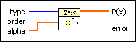
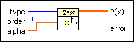

Create Orthogonal Polynomial VI
Owning Palette: Orthogonal & Non-orthogonal Polynomials VIs
Requires: Full Development System
Creates orthogonal polynomial coefficients.

 Add to the block diagram Add to the block diagram |
 Find on the palette Find on the palette |
Owning Palette: Orthogonal & Non-orthogonal Polynomials VIs
Requires: Full Development System
Creates orthogonal polynomial coefficients.

| Add to the block diagram |
Find on the palette |
 |
type specifies the type of orthogonal polynomial coefficients to create.
|
||||||||||||||
 |
order specifies the order of the orthogonal polynomial coefficients. If order is less than zero, the VI sets P(x) to an empty array and returns an error. | ||||||||||||||
 |
alpha specifies the alpha value the VI needs to create associate Laguerre and Gegenbauer polynomial coefficients. When type is Gegenbauer, alpha must be a nonzero value. | ||||||||||||||
 |
P(x) returns the orthogonal polynomial coefficients in ascending order of power. | ||||||||||||||
 |
error returns any error or warning from the VI. You can wire error to the Error Cluster From Error Code VI to convert the error code or warning into an error cluster. |